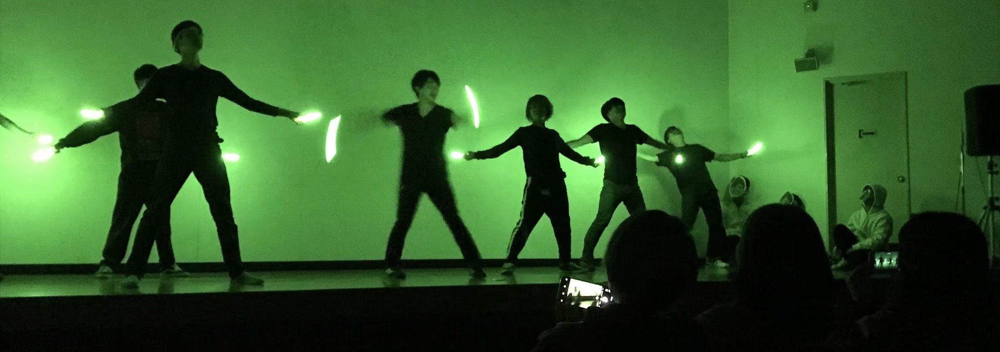

イベント

ここでは、文化祭の仕事だけでなく毎年行っている実行委員会の
イベント行事を3つ程紹介していきたいと思います。
主な行事はBBQ・キャンプ・ボーリングといった
イベントをご用意しております。もちろん他にも部署ごとのイベント等も
あります！是非SNS等でしたい方はコメントください！！！！
※詳しく見たい方は下記の写真をクリックお願いします。
※詳しく見たい方は下記の写真をクリックお願いします。


実行委員会メンバー募集中
実行委員会は一緒に盛り上げるメンバー募集中です！
大学生ならでは青春を一緒に作りませんか？
「自分の考えた企画をやってみたい」
「何かサークルに入りたい」
「友達を増やしたい」
など、どんな理由であれ大歓迎です☆ 文化祭を楽しみたい人にはもちろんのこと 学部学科が違う人との交流ができるので友人が増えたり 新年会やBBQ、キャンプといった楽しい行事も 盛りだくさんです。
少しでも気になった方！ 見学だけでも大丈夫です。是非足を運んでみてください。
お待ちしております!!!!
質問等がございましたらtwitter,InstagramのSNS、 または、下のお問い合わせからお願いします。
「自分の考えた企画をやってみたい」
「何かサークルに入りたい」
「友達を増やしたい」
など、どんな理由であれ大歓迎です☆ 文化祭を楽しみたい人にはもちろんのこと 学部学科が違う人との交流ができるので友人が増えたり 新年会やBBQ、キャンプといった楽しい行事も 盛りだくさんです。
少しでも気になった方！ 見学だけでも大丈夫です。是非足を運んでみてください。
お待ちしております!!!!
質問等がございましたらtwitter,InstagramのSNS、 または、下のお問い合わせからお願いします。